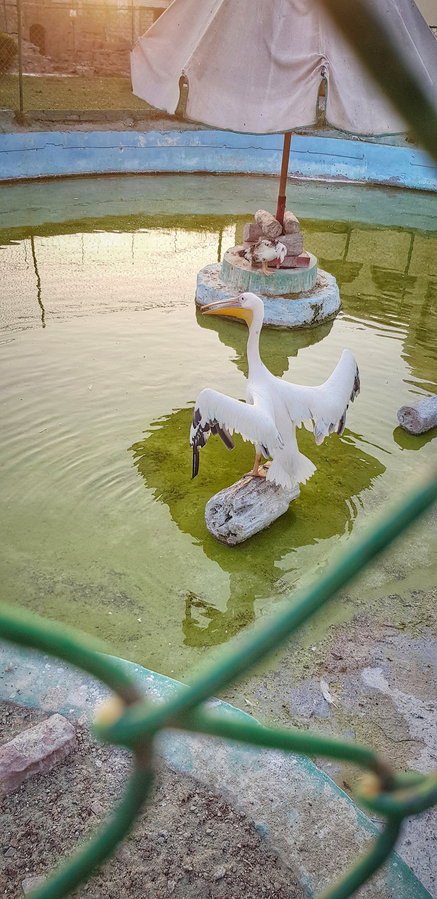
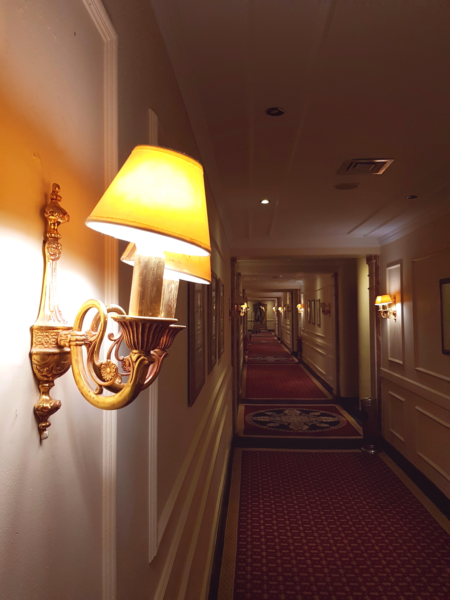

“A photograph is a secret about a secret,
The more it tells you the less you know.”
— Diane Arbus

The Tamed Swan
This swan is stretching its wings, ready to take off. Only when you step back, you will realize this piture that I took was from outside her cage.
Before I knew swans could fly, I did not feel sad for this gorgeous creature, but now that I knew, I do.


Fall from Royalty
By Karoun Lake in Fayoum, lies a palace once owned and occupied by his majesty, King Farouk of Egypt for his hunting trips. After the fall of his reign, this hotel became a destination for everybody and anybody who could afford - and it is not hard to afford. These hallways I could casually walk in were once restricted ang belonged to people of power.